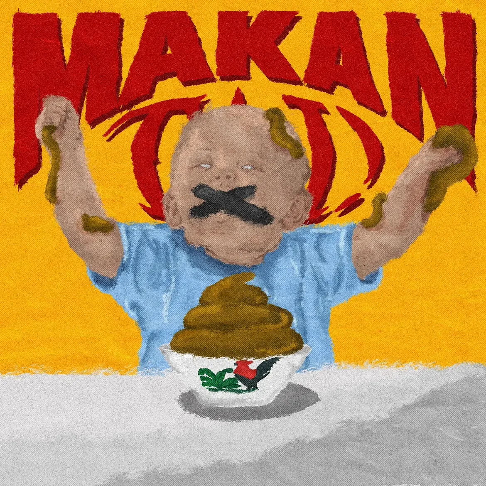
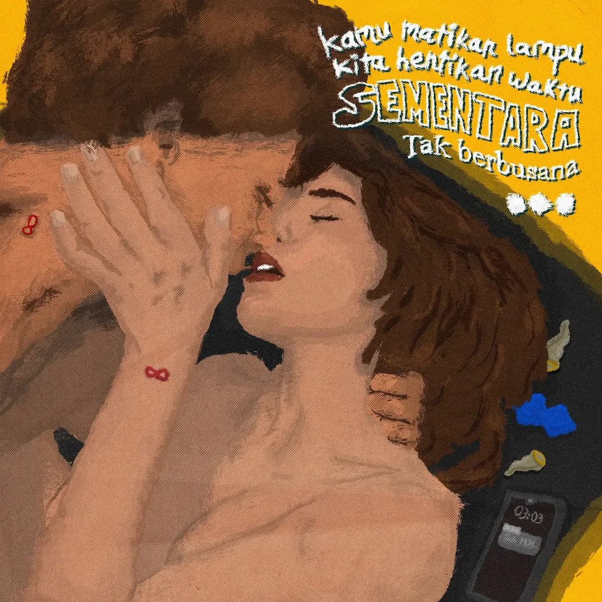
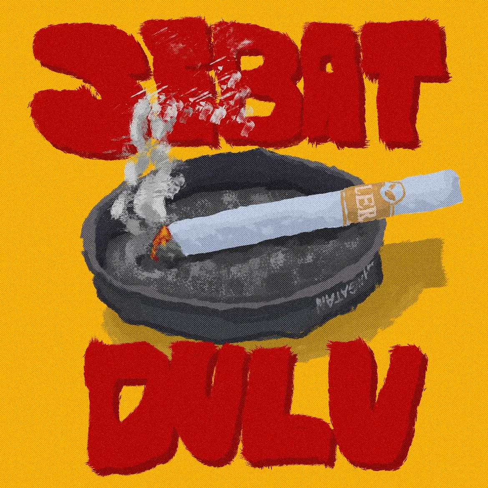
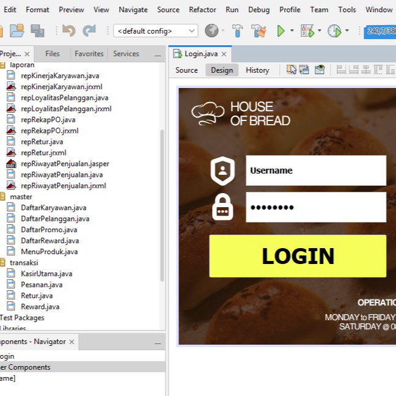
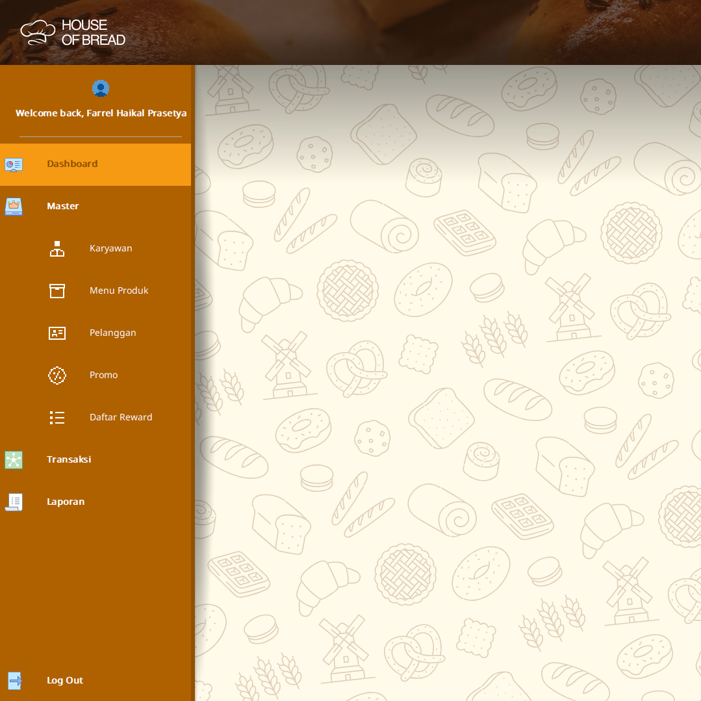

Arahan visual untuk identitas brand natural hair oil. Konsep visual ini dirancang untuk menyoroti kemurnian dan efektivitas formulasi produk yang secara spesifik menggunakan pumpkin seed oil sebagai bio-aktivator utamanya.



Lyrical Resonance
Digital Illustration / Typography
Eksplorasi visual dan ilustrasi digital yang diadaptasi dari penggalan lirik lagu favorit. Proyek ini menggabungkan elemen tipografi dan permainan komposisi warna untuk menerjemahkan emosi dan ritme lagu ke dalam medium visual.
<
Cinematic Tributes
Art Direction / Poster Design
Koleksi desain poster alternatif (fan-made) yang mengeksplorasi pendekatan visual baru untuk beberapa judul film. Proyek ini berfokus pada manipulasi gambar, komposisi tipografi, dan penyesuaian atmosfer warna untuk merangkum esensi cerita ke dalam sebuah kanvas vertikal.


House of Bread
Software Development / Java GUI
Pengembangan aplikasi desktop berbasis Java NetBeans untuk manajemen kasir toko roti. Antarmuka visual dan alur struktur datanya dirancang ramping untuk memprioritaskan kelancaran transaksi langsung dan efisiensi pengisian form penjualan harian, secara sadar memangkas kompleksitas manajemen supplier agar performa sistem tetap ringan dan tepat sasaran.